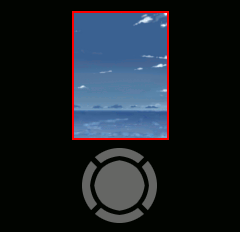
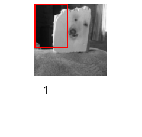

Welcome!
Use the directional keys to navigate.
Right to advance page, left to go back to the previous one.
First, make sure that you have set up your library.
Organize your files like this:
.sequiviewer/[NAME OF WORK]/[CHAPTER]/[PAGE].png
Refer to https://alego.web.fc2.com/kaiosapps/sequiviewer/setup.html for more details
Use the UP and DOWN keys to zoom in or out.

This application makes use of the keypad.

Use the even numbers to move the page around. Pretty self-explanatory.

Use the corner buttons to jump to that corner of the page.

Each corner is mapped to the corresponding button.

To quickly reset the page, press 5.

That's it!
You can exit the tutorial at any time, by pressing LSK.